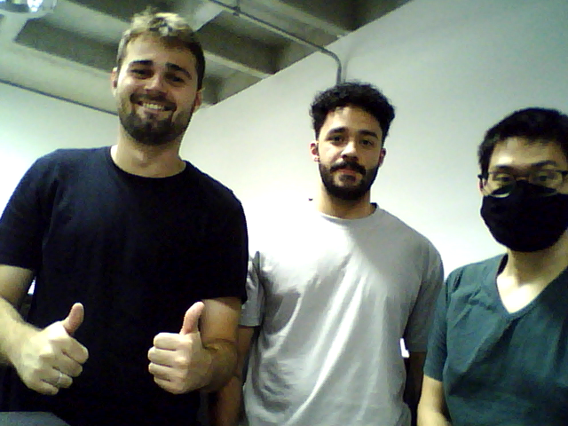

Lucas Daniel dos Santos RA: 111063416
Paulo Henrique Eiji Hayashida RA: 11104714
Victor Giovanetti Monteiro RA: 11201922116
Data de realização do experimento: 24/06/24
Data de Publicação:
Neste laboratório tivemos a tarefa de nos familiarizar com os conceitos básicos de captura de imagens e vídeos utilizando scripts em Python, com isso pudemos criar a base do conhecimento necessário dessas ferramentas para a continuação das atividades em laboratório e para o desenvolvimento do nosso projeto durante o quadrimestre.
A partir dos arquivos disponibilizados no moodle, foram executados os programas em python.
Ao executar o script "L1_1_img.py" é exebida a imagem em escala de cinza, e a para fechar a janela deve-se apertar o botão esc, a imagem está em escala de cinza por conta do parâmetro 0 na função cv.imshow()
O programa "L1_2_video.py" abre uma janela e exibe frame a frame os dados armazenados no arquivo de video mp4, a velocidade de reprodução pode ser regulado pelo time,sleep. Assim ao aumentarmos esse tempo entre frames, o vídeo parecerá mais lento, e ao diminuir o tempo mais rápido vai parece que o vídeo está sendo executado
Executando o programa com a camera conectada a entrada USB, é possível transmitir os quadros captados pela camera para a janela aberta pelo programa
Quando o programa sem alteração é executado, uma janela é aberta e os quadros são mostrados de ponta cabeça, até que o botão "q" seja pressionado, gravando todos os quadros desde o inicio da execução num arquivo avi
Utilizando os programas da Parte 1 corrigidos, foram obtidos os arquivos com o uso da webcam
imagem de Victor, Lucas e Paulo capturada utilizando a webcam
imagem dos avatares de Victor, Lucas e Paulo juntos
Vídeo de Movimentos Lentos
Lápis Lento
Pessoa Lenta
Vídeo de Movimentos Rápidos
Lápis Rápido
Pessoa Rápida
Com a execução dos programas, junto a pesquisa das funções do opencv e seus parâmetros, foi possível compreender o uso de dados e ferramentas, tais como imagens, vídeos e webcam. Em particular, entender os efeitos da manipulação de captura de frames, influenciando na velocidade de reprodução do vídeo.
O Experimento nos permitiu ter uma visão dos conceitos básicos de captura de imagens e vídeos, e algumas das funcionalidades que a biblioteca opencv, nos traz para realização de tarefas que envolvem esse tipo de dado.
https://www.w3schools.com/html/html_images.asp
https://www.w3schools.com/html/html5_video.asp
https://www.geeksforgeeks.org/python-opencv-cv2-imread-method/
https://docs.opencv.org/3.4/d8/dfe/classcv_1_1VideoCapture.html